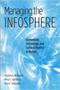
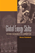

|
Hegemony
The New Shape of Global Power
Agnew, John 296 pp • 6x9 • Spring
2005
paper 978-1-59213-153-2
cloth 978-1-59213-152-5
|

|
City
and Environment
Boone, Christopher G. and Ali Modarres
240 pp • 6x9 • Spring 2006
paper 978-1-59213-284-3
cloth 978-1-59213-283-6
|

|
The
Atlas of Pennsylvania
edited by Cuff, David J., William J. Young, Edward K. Muller, Wilbur
Zelinsky and Ronald F. Abler 304 pp •
13.25x15.5 • Fall 1989
cloth 978-0-87722-618-5 |

|
Captain America and the Nationalist Superhero
Metaphors, Narratives, and Geopolitics
Dittmer, Jason
346 pp • 6x9 • Fall 2012
paper 978-1-4399-0977-5
cloth 978-1-4399-0976-8
|
|
Young Men, Time, and Boredom in the Republic of Georgia
Frederiksen, Martin Demant
New in Paperback!
216 pp • 6x9 • Fall 2016
paper 978-1-4399-0919-5
cloth 978-1-4399-0918-8 |
 |
The Politics of Staying Put
Condo Conversion and Tenant Right-to-Buy in Washington, DC
Gallaher, Carolyn
278 pp • 6x9 • Spring 2016
paper 978-1-4399-1265-2
cloth 978-1-4399-1264-5
|

|
Trading
Down
Africa, Value Chains, and the Global Economy
Gibbon, Peter and Stefano Ponte 272 pp •
6x9 • Spring 2005
paper 978-1-59213-368-0
cloth 978-1-59213-367-3
|

|
Once the American Dream
A comprehensive national study of inner-ring suburbs in the U.S.
Hanlon, Bernadette
224 pp • 6x9 • Fall 2009
paper 978-1-59213-937-8
cloth 978-1-59213-936-1
|

|
California
and the Fictions of Capital
Henderson, George L. 304 pp • 6.125x9.25
• Spring 2003
paper 978-1-59213-198-3
|

|
Telling Young Lives
Portraits of Global Youth
edited by Jeffrey, Craig, and Jane Dyson
232 pp • 6x9 • Fall 2008
paper 978-1-59213-931-6
cloth 978-1-59213-930-9
|
|
"Building Like Moses with Jacobs in Mind"
Contemporary Planning in New York City
Larson, Scott
198 pp • 6x9 • Spring 2013
paper 978-1-4399-0970-6
cloth 978-1-4399-0969-0
|
|
Manufacturing
Suburbs
Building Work and Home on the Metropolitan Fringe
edited by Lewis, Robert 304 pp • 6x9
• Fall 2004
paper 978-1-59213-086-3
cloth 978-1-59213-085-6
|
 |
Managing the Infosphere
Governance, Technology, and Cultural Practice in Motion
McDowell, Stephen D., Philip E. Steinberg and Tami K. Tomasello
256 pp • 5.5x8.25 • Fall 2007
paper 978-1-59213-280-5
cloth 978-1-59213-279-9
|

|
Crossing
the Neoliberal Line
Pacific Rim Migration and the Metropolis
Mitchell, Katharyne 296 pp • 6x9 •
Fall 2004
paper 978-1-59213-084-9
cloth 978-1-59213-083-2
|

|
Concise
Historical Atlas of Pennsylvania
edited by Muller, Edward K. 48 pp • Fall
1989
paper 978-0-87722-672-7 |

|
Global
Energy Shifts
Fostering Sustainability in a Turbulent Age
Podobnik, Bruce 240 pp • 6x9 • Fall
2005
paper 978-1-59213-294-2
cloth 978-1-59213-293-5
|

|
Working
Feminism
Pratt, Geraldine 224 pp • 234x156mm •
Spring 2004
paper 978-1-59213-264-5
cloth 978-1-59213-263-8
|

|
Lawn People
How Grasses, Weeds, and Chemicals Make Us Who We Are
Robbins, Paul
208 pp • 6x9 • Spring 2007
paper 978-1-59213-579-0
cloth 978-1-59213-578-3
|

|
Berlusconi's Italy
Mapping Contemporary Italian Politics
Shin, Michael E. and John A. Agnew
184 pp • 5.5x8.25 • Spring 2008
paper 978-1-59213-717-6
cloth 978-1-59213-716-9
|

|
Multicultural Girlhood
Racism, Sexuality, and the Conflicted Spaces of American Education
Thomas, Mary E.
216 pp • 6x9 • Fall 2011
paper 978-1-4399-0732-0
cloth 978-1-4399-0731-3
|

|
Down and Out in Los Angeles and Berlin
The Sociospatial Exclusion of Homeless People
von Mahs, Jürgen
208 pp • 6x9 • Spring 2013
paper 978-1-4399-0827-3
cloth 978-1-4399-0826-6
|

|
Communities and Crime
An Enduring American Challenge
Wilcox, Pamela, Francis T. Cullen, and Ben Feldmeyer
282 pp • 6x9 • Fall 2017
paper 978-1-59213-974-3
cloth 978-1-59213-973-6
|